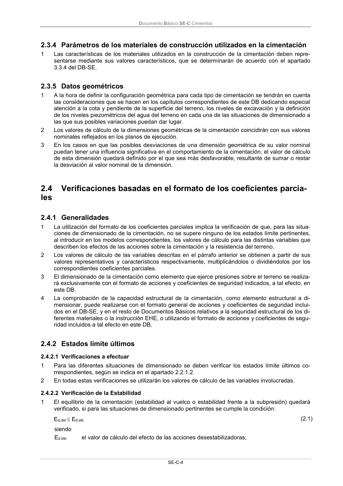

DB-SE-C Cimientos · edición 2019-12-20 · capa oficial
Documento DB-SE-C-oficial · SHA-256 del PDF a71133f4b0dca253e45ea3071c70f2a512354bcc5cd841bf89b1a502f567ac5e
Copia fiel del PDF fuente · Fuente oficial
Ficha de la disposición en la fuente oficial
Formatos: JSON del segmento · Markdown
2.4.2.2 Verificación de la Estabilidad 1 El equilibrio de la cimentación (estabilidad al vuelco o estabilidad frente a la subpresión) quedará verificado, si para las situaciones de dimensionado pertinentes se cumple la condición: Ed,dst Ed,stb (2.1) siendo Ed,dst el valor de cálculo del efecto de las acciones desestabilizadoras; Documento Básico SE-C Cimientos SE-C-5 Ed,stb el valor de cálculo del efecto de las acciones estabilizadoras. 2 Los valores de cálculo de los efectos de las acciones estabilizadoras y desestabilizadoras se de- terminarán según el apartado 2.4.2.5.
